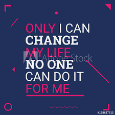
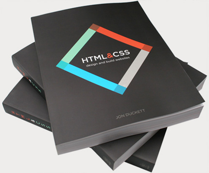

I reside In Des Plaines, Illinois.
I’m an aspiring web developer who loves everything about the web. from the moment i created "Hello World" as my first ever built website, i knew right the way I have found my life long career. Even though It wasn't the best website, I am dedicated to do more it takes to become a professional Web Developer.
I am originary from Africa, but reside in the United States. I got a High School diploma, and few years of college under my belt.
My goal now is to become a Front End Web Developer and make a career out of it. Beside coding and expanding my knowledge, I love writing stories like fictions and non fictions, I like hanging out with friends, playing soccer out door and indoor, love playing video games and love to travel.
My goal is to learn as much possible from my Tech Degree, enhance my portfolio to a professional level and getting certificate.
I want to master the process of building web sites and increase my knowledge, skills and abilities In the following
I’d like to be a Front End Web Developer and help clients create an impressive online presence.
After becoming a Front End Web Developer, I would do everything It takes to become a full Stack Web Developer, and more. That's my end goal.
